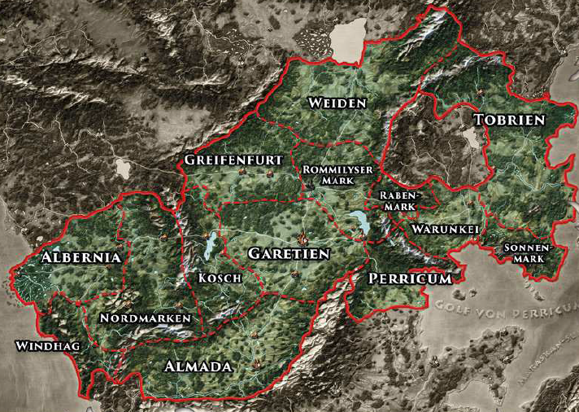

Das Mittelreich
Unter allen Reichen Aventuriens nimmt das Raulsche Reich, auch Mittelreich oder Neues Reich genannt, die größte Fläche ein.

Von der sturmgepeitschten Küste des Meeres der Sieben Winde im Westen bis zur Tobrischen See und dem Golf von Perricum im Osten, vom Raschtulswall und dem Strom Yaquir im Süden bis zum Rathil und zu den Gebirgen von Finsterkamm und Drachensteinen im Norden erstreckt sich das Reich der Kaiserin Rohaja von Gareth. Ganz im Westen liegt das Fürstentum Albernia mit seiner Hauptstadt Havena, dem größten und wichtigsten Handelshafen des Mittelreichs am Meer der Sieben Winde. Weite Bruchlandschaften, See und tückische Moore bedecken das albernische Land. Vemutlich gibt es nirgendwo sonst auf Aventurien so viele Feen wie im dichten Grün des albernischen Farindelwalds. Am bekanntesten ist neben der Fee Farindel der mächtige Flussvater, den viele als Verkörperung des Großen Flusses selbst verstehen, in dessen Fluten sein Reich liegen soll.
Zwischen Albernia und den Gipfeln von Koschbergen und Eisenwald liegt das Herzogtum Nordmarken, das berüchtigt ist für seine Flusspiraten und geheimnissvollen Druidenzirkel und berühmt für seine mächtigen Herzöge und praiostreuen Adligen. Die Nordmarken sind eine starke Macht im Reich. Gebirge, Hügel und dichte Wälder mit zahlreichen Siedlungen prägen das Herzogtum und die Verwaltung des Mittelreiches residiert in der nordmärkischen Hauptstadt Elenvina. Traditionell sind die unverbrüchlich treuen Nordmärker und die freiheitsliebenden Albinier sich spinnefeind.
Die hohen Gipfel der Windhagberge und ihre dicht bewldeten Täler bestimmen das Bild dar Markgrafschaft Windhag an der Westküste, die im Süden in das horasische Herzogtum Grangor übergeht. Bewohner gibt es hier nur wenige. Sie siedeln in Fischerdörfen und Piratennestern an den Westhängen der Berge und leben von Efferds Gaben wie Fischen und sonstigen Meeresfrüchten. In den entlegenen Täler haben Räuberbanden, wilde Sippen und sogar manche Orkstämme ihr Revier.
Wer an das Fürstentum Kosch denkt, denkt an Zwerge und Gemütlichkeit. Zwei wichtige Bergkönigreiche der Zwerge finden sich in diesem Landstrich. Die Provinz umfasst große Teile des gleichnamigen Gebirges und das hügelige Land östlich davon, bis hin zum Großen Fluss. Ein Viertel der Koscher sind Zwerge und so gilt der Kosch ganz zu Recht auch als Zentrum der aventurischen Handwerkskunst, die besonders in der Provinzhauptstadt Angbar, dem Zentrum des Ingerimkultes, ihre Blüten zeigt.
Die südlichste Provinz des Mittelreichs und eine die ebenfalls an das Horasreich grenzt, ist das Fürstentum Almada am Flusslauf des Yaquir. Sie gilt als Bollwerk gegen die Novadis, die rastullahgläubigen Wüstenkrieger aus der Khom, die häufig bei den Ungläubigen nördlich des Yaquir auf Raubzug gehen. Als Grenzprovinz zum Horasreich pflegen die Bewohner die jahrhundertealte Rivalität, die das Alte Reich mit dem Mittelreich verbindet und der almadanische Adel gilt seit jeher als aufmüpfig und heißblütig. Dank des milden Klimas gedeihen Weinbau und Pferdezucht. Die Bevölkerung des Landstrichs strahlt offene Lebensfreude aus, die sich aber auch in einer lockeren Zunge und einer gewissen Streitlust äußert. Die Hauptstadt Punin ist das Herz des nördlichen Boronkults, gilt als weltoffen und zieht Abenteurer, Kulturbegeisterte und Gelehrte gleichermaßen an.
Nordöstlich des Kosch liegt die Markgrafschaft Greifenfurt, die besonders hart unter den Kriegszügen der Orks zu leiden hatte. Noch immer trifft man hier auf marodierende Schwarzpelze und das Leben auf den Feldern des Landes und in den Handwerksstuben der Provinzhauptstadt Greifenfurt ist häufig mühsam und karg. Viele Flüchtlinge aus dem von den borbaradianischen Invasoren eroberten Tobrien versuchen hier einen Neuanfang.
Östlich des Kosch liegt das Königreich Garetien, die zentrale Provinz des Mittelreichs. Viele Äcker bedecken das fruchtbare Land, in einer großen Zahl von Kleinstädten florieren Handel und Handwerk und die ganze Provinz scheint damit beschäftigt, die vielen hungrigen Mäuler der Metropole Gareth zu stopfen. Sie ist die Hauptstadt Garetiens und des Mittelreich und die größte Stadt des Kontinents, zu der fast alle Straßen führen. Es ist eine Stadt der Bürger und Zünfte, Geweihten und Krieger, Diebe und Streuner, Domizil des Handelsherren Stover Regolan Stoerrebrandt, des reichsten Mannes Aventuriens und Standort der Stadt des Lichts, dem Kultzentrum der Praioskirche. Als unheimlichster Ort Garetiens muss die Wald- und Sumpflandschaft südwestlich der Hauptstadt gelten. In der Dämonenbrache tobte einst die Erste Dämonenschlacht, verheerte das Land und bis heute wagen sich nur wenige in das verfluchte Gebiet.
Teile Garetiens und das gesamte ehemalige Fürstentum Darpatien bilden seit dem Jahr des Feuers gemeinsam sie östlichen Marken: Im Kriegshafen der Stad Perricum, der Hauptstadt der gleichnamigen Markgrafschaft, sind die Schiffe der mittelreichischen Perlenmeerflotte stationiert. Die Seefahrt ist das bestimmende Merkmal dieser recht wohlhabenden Provinz, aber auch die kämpferische Göttin Rondra genießt hohe Verehrung, steht hier doch ihr wichtigster aventurischer Tempel.
Die junge Rommilyser Mark umfasst weite Teile des ehemaligen Darpatien und seine Hauptstadt Rommilys dient der Kirche Travias, der Göttin von Heim und Herd, als Hauptsitz. Das Land bietet Flüchtlingen und Kriegsversehrten Heimat und Arbeit und seine Bewohner halten die Hoffnung auf Schutz und Geborgenheit aufrecht.
An der Trollpforte, dem breiten Gebirgspass zwischen Schwarzer Sichel und Trollzacken, behauptete sich die Rabenmark gegen die Heerscharen der Untotwn aus der schwer gebeulten Warunkei.
Auch die Markgrafschaft Warunk kämpft seit der Zurückeroberung der gleichnamigen Stadt gegen das düstere Erbe Borbarads. Hier erhoben sich zahllose Untote und Geister, die den LAndstrich bis heute heimsuchen.
Nördlichste Provinz des Reiches ist das Herzogtum Weiden, das sich vom Finsterkamm bis in die Rote und Schwarze Sichel hinein und längst der südlichen ufer des Neunaugensees bis zum Rathil erstreckt. Wie der Name vermuten lässt, ist diese Provinz ein Zentrum der Viehzucht. Die hier ansässigen Rinderbarone, die über große Weidenflächen verfügen, gehen beim Kampf um die Macht nicht zimperlich vor. Außerdem wird die Tradition des Rittertums in seiner ursprünglichsten Form in Ehren gehalten. Die Weidener verstehen sich als Bollwerk gegen die Orks, die in den nordwestlichen Grenzlanden eine stete Bedrohung darstellen.
Das von dichten Wäldern und kargen Äckern bedeckte Herzogtum Tobrien umfasste einst sämtliche Länderein östlich der Schwarzen Sichel und war die größte Provinz des Reiches. Neben der Markgrafschaft Warunk war es von der Besetzung durch die Schergen Borbarads am ärgsten betroffen und verlor große Teile seiner Fläche an die Schwarzen Lande. Inzwischen wurden die Gebiete südöstlich der Drachensteine bis zu den Beilunker Bergen aber befreit und gehören nun wieder zum tobrischen Herzogtum. Allein die Bergländerein des waldreichen Transysilien und die dämonisch verzerrte Stadt Yol-Ghurmak wehren sich erfolgreich gegen jede Rückeroberung durch die Kämpfer des Mittelreichs. Das Land ist dünn besiedelt, viele Flüchtlinge aus dem Osten Tobriens sind weiter nach Garetien, Almada oder sogar Albernia gezogen.
Eine gleißende Bastion gegen Borbarads Erben ist bis heute die Markgrafschaft Sonnenmark rund um Beilunk, die durch ein Wunder des Sonnengottes Praios gegen unheilige Zauberrei geschützt wurde. Zwar sind die Heptarchen, die Erben Borbarads, inzwischen besiegt, aber es wird wohl noch Jahrzente dauern, bis all ihre Hinterlassenschaften vom Antlitz der Welt getilgt worden sind - falls es überhaupt gelingt.